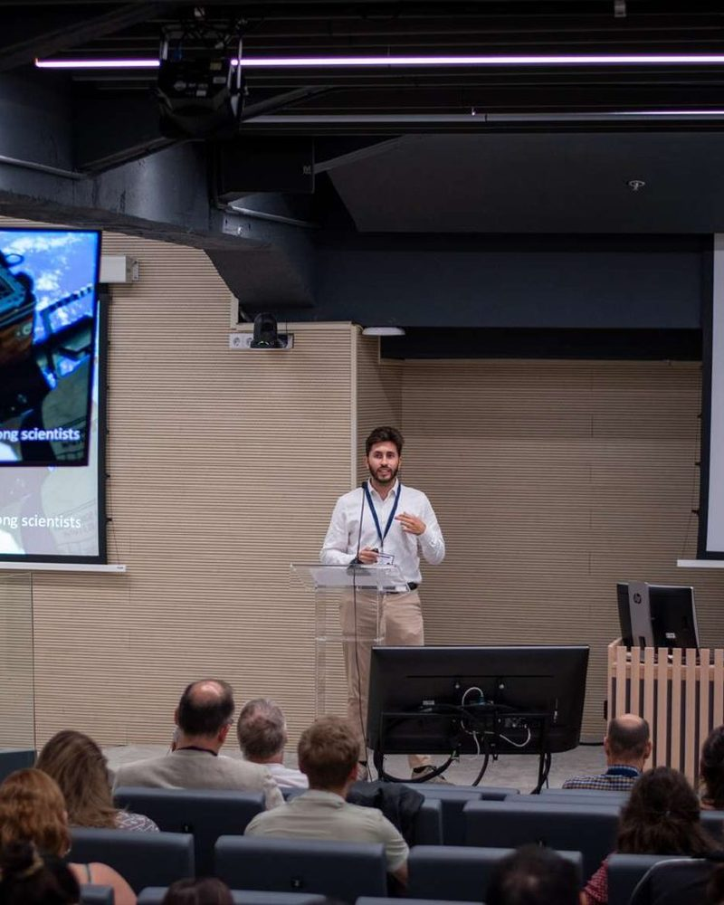
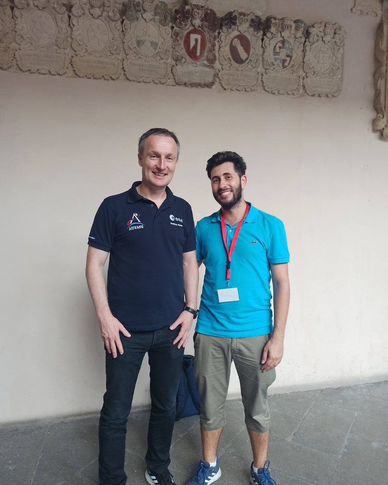
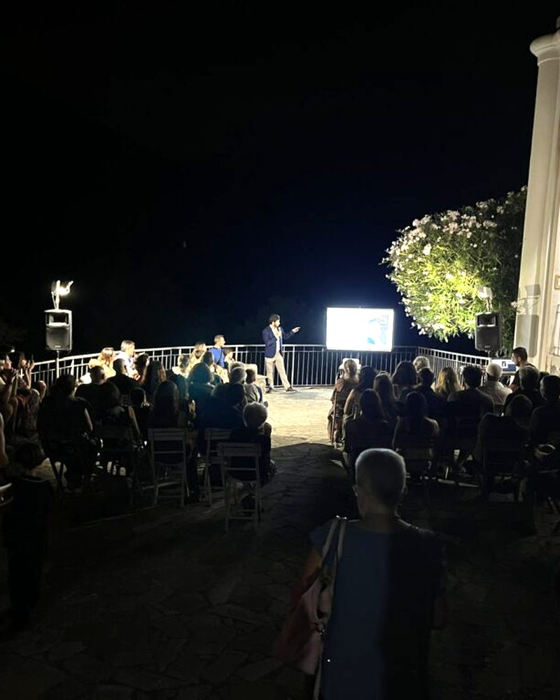
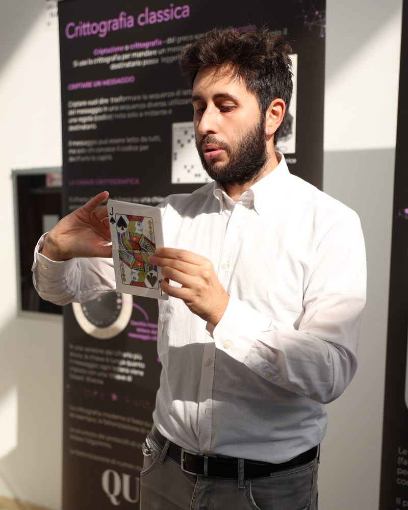

Divulgazione e public engagement
Attività hands-on per festival, talk per pubblici specialisti e non, serate di osservazione al telescopio.
Astrofisico · Divulgatore scientifico
Rendo l'Universo una cosa da toccare con mano.
Dottore di ricerca in Astronomia. Progetto attività hands-on, mostre ed esperienze in realtà virtuale che portano la fisica e l'astronomia a scuole, festival e grande pubblico.




Mi sono formato come astrofisico tra Roma e Padova, studiando l'atmosfera di Giove con i dati della sonda Juno. Durante il dottorato all'Università di Padova e all'INAF ho scelto di dedicarmi a una domanda diversa: come si racconta la scienza a chi non la fa di mestiere?
Da allora progetto strumenti e attività per la divulgazione: dall'app in realtà virtuale MOON RESCUER, testata da un centinaio di persone, alla mostra nazionale sulla fisica quantistica che ho gestito all'Università di Camerino. Oggi lavoro come formatore STEM freelance con scuole, associazioni e festival.
Attività hands-on per festival, talk per pubblici specialisti e non, serate di osservazione al telescopio.
Gestione completa di una mostra nazionale, organizzazione di congressi internazionali (EAS 2024), formazione e guida di team.
Laboratori inquiry-based per primaria e secondaria, modelli astronomici da costruire, simulazioni con Stellarium e Scratch.
App VR per la scienza (Unity, C#, Meta Quest), prototipi AR e WebGL, laboratori con Arduino.
Grafica e contenuti digitali per eventi e collaborazioni scientifiche, modellazione 3D con Blender.
Italiano madrelingua, inglese C1. Abituato a lavorare in team internazionali e da remoto.

Gestione completa della mostra nazionale: allestimento, formazione del team, visite guidate. Oltre 900 visite.

Un'esplorazione lunare in VR per raccontare la scienza della Luna, progettata e sviluppata durante il dottorato.

30 ore di laboratorio di astronomia per una scuola media: modelli da costruire, Stellarium e Scratch.
Collaboriamo
Mostre, laboratori per le scuole, attività per festival ed eventi, esperienze in realtà virtuale: raccontami cosa hai in mente e troviamo insieme il formato giusto per il tuo pubblico.